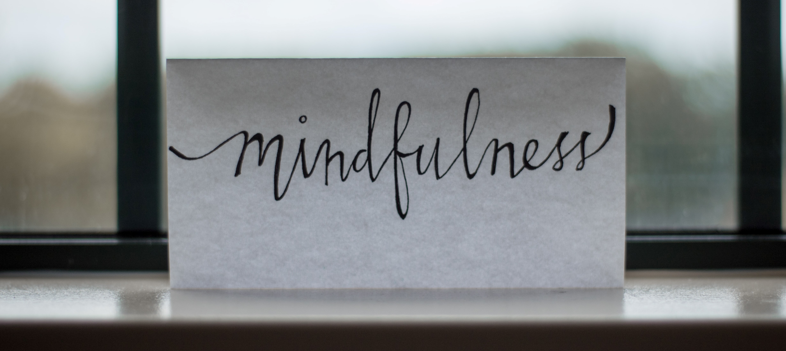

It’s important to take care of yourself and get the most from life. Below are 10 practical ways to look after your mental health. Making simple changes to how you live doesn’t need to cost a fortune or take up loads of time. Anyone can follow this advice. Why not start today?.
Our bodies and our minds are connected. When you take care of your body, you also take care of your mind.
This article is a well laid out summary of the importance of mental health and essential tips that can help to improve how you relate with your mind..
Lets Hear
It From
Them
Food
Food is our fuel. It gives us important nutrients that help our bodies work. It makes sense that the better we eat, the better we work. Our brains work better, too. Research shows that the food we eat is a big part of mental health. Healthy foods like fruits, vegetables and whole grains give us the nutrients to work our best.
.
:
Eat regularly, so your body has enough fuel to work well all day. Skipping meals can make you feel tired or irritable.
Watch out for too much caffeine. Caffeine is the part of coffee and black tea that gives you energy. It is in other drinks and snacks, too. Caffeine can add to feelings of anxiety. It can also stop you from sleeping well.
Watch how much sugar you eat. Eating sugar gives you a quick burst of energy. But when that energy is gone, you feel more tired. It can lower your mood and make you feel irritable.
Watch your alcohol use. Alcohol just hides problems for a short time. It makes sadness, stress and other feelings harder to deal with later on.
Sleep
Sleep has a huge sleep on mental health. When we get enough sleep, it is easier to cope with stress, handle problems, concentrate, think positively and remember things.
The exact amount of sleep you need is based on your own body. You know that you are getting enough sleep when you do not feel sleepy during the day.
It is easy to think that we can get more done if we cut back on sleep. But it is harder to get things done when we do not get enough sleep.
Avoid exercising too close to your bedtime. Exercise gives you energy. But slow, relaxing activities like yoga can help calm you down before bed.
Avoid big meals, alcohol, cigarettes and caffeine before bed. Caffeine is the part of coffee or black tea that makes you feel awake.
Make sure your room is comfortable for sleeping. Many people find that they sleep best when their room is dark, quiet and cool.
Stick to quiet activities just before bed, like reading.
Follow a routine. Try to go to bed around the same time every night and wake up around the same time every morning, even on weekends.
Only use your bedroom for sleeping and sex. Do work or watch TV in a different room.
Avoid naps during the day if you have a hard time sleeping at night.
healthy
thinking
Good mental health does not mean that we only ever have happy thoughts. Sad or upsetting things are part of life. Problems are also part of life. Good mental health means looking at the situation for what it really is.
The way we think about something has a big effect on the way we feel. If we feel like we can handle a problem, we often feel good. If we do not think that we can handle a problem, we often feel bad.
Right Medium
Sometimes, we think that something is bad, even when it is not true. These thoughts are sometimes called “thinking traps.” They are traps because they are easy to fall into and can get us stuck and feeling bad.
Thinking that bad things always happen to you. “I wanted to go to the beach, but now it is raining. This always happens to me! Now my day is ruined!”Thinking that something can only be all good or all bad. “I did not do as well as I wanted on that last test. I am not smart enough for this course.”
Focusing only on the negative part of a situation. “My team won, but I cannot believe I missed that shot. I must be very bad at soccer. Maybe I should stop playing.”
Jumping to conclusions before you know what really happened. “My friend did not call me back. She must not like me very much.”
We face problems every day. We can fix some problems easily, but other problems are not as easy to solve. When we do not take action, stress can build up until we do not know what to do next..

We all need to take time to slow down and relax. It is a big part of managing stress and enjoying our lives.
When we do not take time to slow down, stresses can add up until we feel too overwhelmed to do anything.
When we relax, it is easier to see problems and solutions clearly. It is easier to manage difficult feelings , and it is easier to see the good sides of things. It is easier to focus on what is happening now instead of worrying about the past or future.
Doing things we enjoy is good for our health. It helps us feel refreshed and helps us feel good about ourselves
Doing things we enjoy is good for our health. It helps us feel refreshed and helps us feel good about ourselves